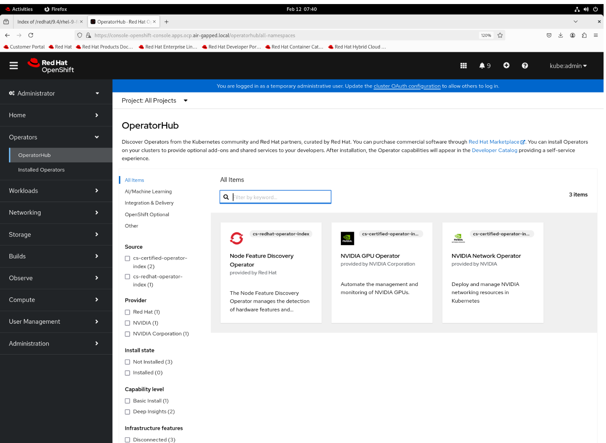

NVIDIA Network Operator Deployment on Disconnected OpenShift
On this page
Deploying OpenShift operators in an environment with internet access is typically straightforward. However, in industries like cyber security, military sector or Telco/communications, where security concerns often prohibit internet access, the process becomes more complex. In a disconnected or air-gapped environment, internet access is usually restricted or unavailable.
Prerequisites
The following requirements must be met:
OpenShift is installed in a disconnected environment
A private registry is deployed in the disconnected environment
Network Layout and Server Roles
The following network layout is used in this guide:

Server Name |
Services running on |
Access to Internet |
|---|---|---|
srv01 |
NTP, DHCP, DNS, HTTP |
Yes |
mirror |
Mirroring tools, Local Registry |
Yes |
master01, master02, master03 |
Control Plane servers in a cluster |
No |
worker01, worker02 |
Workers in a cluster |
No |
Mirroring images from public registries
This section requires an internet connection, for fetching images from public registries. In our scenario we are using the mirror server for this operation.
Install OpenShift CLI
Follow the instructions in the OpenShift documentation to install the OpenShift CLI (oc).
Install oc-mirror plugin
To download the oc-mirror CLI plugin, navigate to the downloads page of the OpenShift Cluster Manager. Under the “OpenShift disconnected installation tools” section, click “Download” for “OpenShift Client (oc) mirror plugin” and save the file.
Extract the archive:
tar -xvf oc-mirror.tar.gz
chmod +x oc-mirror
Note
Do not rename the oc-mirror file
To install the oc-mirror CLI plugin, place the file in your PATH. For example:
sudo mv oc-mirror /usr/local/bin/
Verify that the plugin for oc-mirror is installed:
oc mirror help
Note
There is no dash (-) between oc and mirror.
If the command returns help options, then the oc-mirror CLI plugin is installed.
Configure the oc-mirror credentials
Download your registry.redhat.io pull secret from Red Hat OpenShift Cluster Manager.
Convert the pull secret to JSON format:
cat ./pull-secret | jq . > config.json
Copy the JSON file to the .docker directory:
mkdir ~/.docker
cp config.json ~/.docker/config.json
Log in to registry.redhat.io:
podman login registry.redhat.io
Create the oc-mirror ISC (ImageSourceConfiguration)
The oc-mirror tool uses an ISC configuration file to define what needs to be mirrored. This configuration allows you to specify the catalog source name and the versions of the operators you want to mirror.
Find operator channel and release information for the required OpenShift version (example: 4.19):
oc mirror list operators --catalogs --version=4.19
Available OpenShift OperatorHub catalogs:
OpenShift 4.19:
registry.redhat.io/redhat/redhat-operator-index:v4.19
registry.redhat.io/redhat/certified-operator-index:v4.19
registry.redhat.io/redhat/community-operator-index:v4.19
registry.redhat.io/redhat/redhat-marketplace-index:v4.19
In order to mirror NFD and NVIDIA Network-Operator, we will use the following catalogs:
redhat-operator-index
certified-operator-index
Find the channel for NFD operator:
oc mirror list operators --catalog=registry.redhat.io/redhat/redhat-operator-index:v4.19 --package=nfd
NAME DISPLAY NAME DEFAULT CHANNEL
nfd stable
PACKAGE CHANNEL HEAD
nfd stable nfd.4.19.0-202508120121
Find the channel for NVIDIA Network Operator:
oc mirror list operators --catalog=registry.redhat.io/redhat/certified-operator-index:v4.19 --package=nvidia-network-operator
NAME DISPLAY NAME DEFAULT CHANNEL
nvidia-network-operator v25.7
PACKAGE CHANNEL HEAD
nvidia-network-operator stable nvidia-network-operator.v25.7.0
nvidia-network-operator v25.7 nvidia-network-operator.v25.7.0
Use the oc mirror command to create a template for the ISC configuration file.
oc mirror init > imagesset-config.yaml
Edit the new ISC file and update it using the right catalog and the operators release information you gathered in the previous steps. Here’s an example of an ISC configuration file for our scenario:
kind: ImageSetConfiguration
apiVersion: mirror.openshift.io/v1alpha2
storageConfig:
local:
path: /path/to/disk-mirror-dir/metadata
mirror:
platform:
channels:
- name: stable-4.19
minVersion: 4.19.0
maxVersion: 4.19.0
type: ocp
operators:
- catalog: registry.redhat.io/redhat/redhat-operator-index:v4.19
packages:
- name: nfd
channels:
- name: stable
- catalog: registry.redhat.io/redhat/certified-operator-index:v4.19
packages:
- name: nvidia-network-operator
channels:
- name: stable
additionalImages:
- name: registry.redhat.io/ubi8/ubi:latest
helm: {}
Note
Please keep in mind that you can decide what will be the max and min version of any channel in any catalog according to your requirements. In our case, to save space on storage, we minimized it to one version only.
Create the operators’ images TAR file
Create a directory for the image’s TAR file, and then run the command:
mkdir data
oc mirror --verbose 3 --config=imagesset-config.yaml file://data
Once the operation is completed, the TAR file will appear in created directory:
ls -ltrh data/
total 35G
drwxr-xr-x. 3 root root 17 Jan 27 07:36 oc-mirror-workspace
-rw-r--r--. 1 root root 35G Jan 27 07:40 mirror_seq1_000000.tar
Upload the container images to the private registry
Move the TAR file to the disconnected environment
The operational procedures and security requirements can vary significantly from one organization to another. For example, in certain highly restricted environments, you must copy the TAR file to a portable disk, which you take to your disconnected environment’s security team for review.
Mirroring the operator from disk to private registry
Once the data has been moved to the disconnected environment, you can begin pushing the images in your private registry. Because you’ve used the oc-mirror plugin to push all necessary container images, you must configure the tools accordingly, with the credential information pointing to your private registry instead of the Red Hat public registry.
This is an example of config.json file for local registry:
cat /mirror-data/config.json
{
"auths": {
"mirror.air-gapped.local:5000": {
"auth": "aW5pdDpxYXdzMTI="
}
}
}
Create a directory to copy the TAR file, and to serve as the destination for oc mirror output:
mkdir data
Copy the TAR file to the destination directory:
mkdir data
cp mirror_seq1_000000.tar data/
cd data
Execute the oc mirror command to upload the container’s images to your private registry:
oc mirror --verbose 3 \
--from=./mirror_seq1_000000.tar \
docker://mirror.air-gapped.local:5000/ocp/openshift4
Once complete, you get the following directories with similar files:
ls -ltr data/oc-mirror-workspace/results-1737982710/
total 64
drwxr-xr-x. 2 root root 6 Jan 27 07:58 charts
drwxr-xr-x. 2 root root 52 Jan 27 08:03 release-signatures
-rw-r--r--. 1 root root 49619 Jan 27 08:03 mapping.txt
-rwxr-xr-x. 1 root root 253 Jan 27 08:03 catalogSource-cs-redhat-operator-index.yaml
-rwxr-xr-x. 1 root root 259 Jan 27 08:03 catalogSource-cs-certified-operator-index.yaml
-rwxr-xr-x. 1 root root 1565 Jan 27 08:03 imageContentSourcePolicy.yaml
Configure the Openshift catalog
You must be logged in to your OpenShift instance as a user with cluster-admin privileges. In our setup we are using kubeconfig file created with OCP deployment in isolated network:
export KUBECONFIG=/mirror-data/iso_build/brm_static/auth/kubeconfig
Keeping the Openshift default catalogs in a disconnected environment would just trigger unnecessary errors, so disable the default OperatorHub catalog sources:
$ oc patch OperatorHub cluster --type json -p '[{"op": "add", "path": "/spec/disableAllDefaultSources", "value": true}]'
Apply the ICSP yaml file:
oc apply -f /mirror-data/data/oc-mirror-workspace/results-1737982710/imageContentSourcePolicy.yaml
Next, create the Red Hat catalog, you could run it for each catalog workspace that you have. In our scenario it’s: certified-operator-index and redhat-operator-index:
oc apply -f data/oc-mirror-workspace/results-1737982710/catalogSource-cs-redhat-operator-index.yaml
oc apply -f data/oc-mirror-workspace/results-1737982710/catalogSource-cs-certified-operator-index.yaml
Verify that you can see the catalog in the mirrored operators in UI “Operators > OperatorHub”:
{kind=link}
Installing Operators in the disconnected environment
The easiest way to install the operators in OpenShift it’s using the OpenShift UI. Once you have the OpenShift cluster UI open, follow these steps:
Click on Operators > OperatorHub
Select the operator to install
Keep the default settings and click Install
Create the instances
After successful installation of all operators you must create the instances or polices depending on your use case.
Create the NFD instance
In the web console, click “Operators > Installed Operators”, and then “Node Feature Discovery Operator” In Details > Provided API’s look for (NFD) NodeFeatureDiscovery “Create instance”
Once the instance creation will completed you can find it in “Operators > Installed Operators > Node Feature Discovery Operator > All instances”
NVIDIA DOCA OFED driver container in disconnected environment
In case you want to use the NVIDIA DOCA OFED driver container in the disconnected environment, the following steps are required:
Create Local Package Repositories
Create the Local Package Repository required:
redhat.repo
ubi.repo
cuda.repo
The detailed instructions and examples about how to create local repositories is available in this article . Instructions on how to create a repo file can be found here.
redhat.repo:
[baseos]
name=rhel-9-for-x86_64-baseos-rpms
baseurl=http://srv01.air-gapped.local/redhat/9.4/el-9-for-x86_64-baseos-rpms
gpgcheck=0
enabled=1
[apstream]
name=rhel-9-for-x86_64-appstream-rpms
baseurl=http://srv01.air-gapped.local/redhat/rhel-9-for-x86_64-appstream-rpms
gpgcheck=0
enabled=1
ubi.repo:
[ubi-9-baseos]
name = Red Hat Universal Base Image 9 (RPMs) - BaseOS
baseurl = http://srv01.air-gapped.local/redhat/ubi-9-baseos-rpms
enabled = 1
gpgcheck = 0
[ubi-9-appstream]
name = Red Hat Universal Base Image 9 (RPMs) - AppStream
baseurl = http://srv01.air-gapped.local/redhat/ubi-9-appstream-rpms
enabled = 1
gpgcheck = 0
cuda.repo:
[cuda]
name=cuda
baseurl=http://srv01.air-gapped.local/nvidia/cuda
priority=0
gpgcheck=0
enabled=1
Create the ConfigMap for the repos files:
oc create configmap repo-config -n nvidia-network-operator --from-file=redhat.repo --from-file=ubi.repo --from-file=cuda.repo
If self-signed certificates are used for an HTTPS based local repository, a ConfigMap must be created for those certificates:
oc create configmap cert-config -n nvidia-network-operator --from-file=<path-to-pem-file>
Create a precompiled container for the DOCA OFED driver
We will use the mirror server to build the precompiled container for the DOCA OFED driver.
Please verify that you have the following:
Podman (RH) installed on your build system
Web access to NVIDIA NIC drivers sources
Follow the instructions in Precompiled Container Build Instructions for NVIDIA DOCA-OFED Driver Container section to build the precompiled container.
Note
You need to make the created image accessible in your environment (on the local registry server). Working with container images is described in this page.
In order to get the sha256 of the image, you can use the following command:
skopeo inspect docker://mirror.air-gapped.local:5000/mellanox/doca-driver:your-tag | jq -r '.Digest'
Create the NIC Cluster Policy instance
In the web console, click “Operators > Installed Operators”, and then “NVIDIA Network Operator > NicClusterPolicy > Create NicClusterPolicy”
You need to provide required parameters depending on your setup. After editing and overriding our nic-cluster-policy yaml looks like this:
apiVersion: mellanox.com/v1alpha1
kind: NicClusterPolicy
metadata:
name: nic-cluster-policy
spec:
ofedDriver:
certConfig:
name: cert-config
env:
- name: RESTORE_DRIVER_ON_POD_TERMINATION
value: "true"
- name: UNLOAD_STORAGE_MODULES
value: "true"
- name: CREATE_IFNAMES_UDEV
value: "true"
forcePrecompiled: true
image: doca-driver
imagePullSecrets:
- mirror-registry-ps
livenessProbe:
initialDelaySeconds: 30
periodSeconds: 30
readinessProbe:
initialDelaySeconds: 10
periodSeconds: 30
repoConfig:
name: repo-config
repository: mirror.air-gapped.local:5000/mellanox
startupProbe:
initialDelaySeconds: 10
periodSeconds: 20
terminationGracePeriodSeconds: 300
upgradePolicy:
autoUpgrade: true
drain:
deleteEmptyDir: true
enable: true
force: true
podSelector: ""
timeoutSeconds: 300
maxParallelUpgrades: 1
safeLoad: false
waitForCompletion:
timeoutSeconds: 0
version: sha256:9a831bfdf85f313b1f5749b7c9b2673bb8fff18b4ff768c9242dabaa4468e449
Note: Please be sure to provide configured ConfigMaps: repo-config and cert-config.
If your local repository requires username and password for access you need to create imagePullSecrets and provide this parameter in nic-cluster-policy.yaml:
imagePullSecrets:
- mirror-registry-ps
How to create imagePullSecrets:
oc -n nvidia-network-operator create secret docker-registry \
--docker-server=mirror.air-gapped.local:5000 \
--docker-username=init \
--docker-password=qaws12 \
mirror-registry-ps